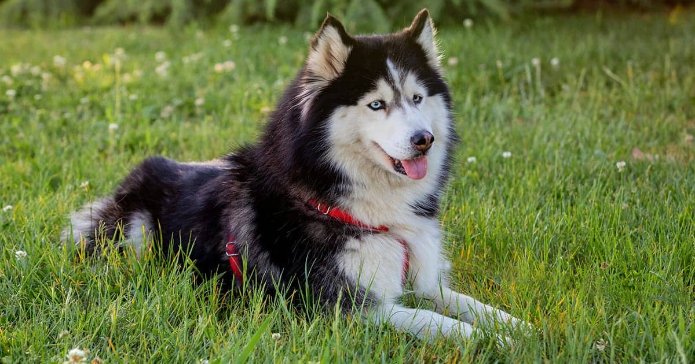

<!DOCTYPE html>
<html lang="en">
<head>
    <meta charset="UTF-8">
    <meta name="viewport" content="width=device-width, initial-scale=1.0">
    <title>About Luna</title>
    <link rel="stylesheet" href="styles.css"> <!-- You may create a separate CSS file -->
</head>
<body id="AboutPage">
    <!-- <div class="container">
        <a class="navbar-brand" href="index.html">My Labs</a>
        <button class="navbar-toggler" type="button" data-bs-toggle="collapse" data-bs-target="#navbarNav" aria-controls="navbarNav" aria-expanded="false" aria-label="Toggle navigation">
          <span class="navbar-toggler-icon"></span>
        </button>
        <div class="collapse navbar-collapse" id="navbarNav">
          <ul class="navbar-nav me-auto mb-2 mb-lg-0">
            <li class="nav-item">
              <a class="nav-link active" aria-current="page" href="index.html">Home</a>
            </li>
            <li class="nav-item">
              <a class="nav-link" href="products.html">Products</a>
            </li>
            <li class="nav-item">
              <a class="nav-link" href="services.html">Services</a>
            </li>
            <li class="nav-item">
              <a class="nav-link" href="about.html">About Us</a>
            </li>
            <li class="nav-item">
              <a class="nav-link" href="contact.html">Contact Us</a>
            </li>
          </ul>
          <form class="d-flex" role="search">
            <input class="form-control me-2" type="search" placeholder="Search" aria-label="Search">
            <button class="btn btn-outline-light" type="submit">Search</button>
          </form>
        </div>
      </div> -->

    <!-- <header>
        <h1>About Luna</h1>
    </header>
    
    <main>
        <section id="about-luna">
            
            <p>Hello, meet Luna, our magnificent Siberian Husky! With her striking blue eyes and majestic coat, Luna is a true beauty. She's not just a pet; she's a beloved member of our family.</p>
            
            
            <p>Luna's adventurous spirit knows no bounds. She absolutely loves outdoor escapades, especially hiking through the wilderness and chasing squirrels in the park. Her energy and enthusiasm are contagious, bringing joy to everyone around her.</p>
            <p>Despite her playful nature, Luna also has a gentle side. She's incredibly affectionate and loves cuddling up with us after a long day's adventure. Luna's presence fills our home with warmth and happiness, making every moment together truly special.</p>
        </section>
    </main>
    <footer>
        <p>Thank you for taking the time to learn more about Luna. She's more than just a dog; she's a source of endless love and laughter in our lives.</p>
        <a class="Resume-Link" href="Resume.html">Resume</a>
        
    </footer> -->

    <script src="./scripts/app.js"></script>
</body>
</html>
